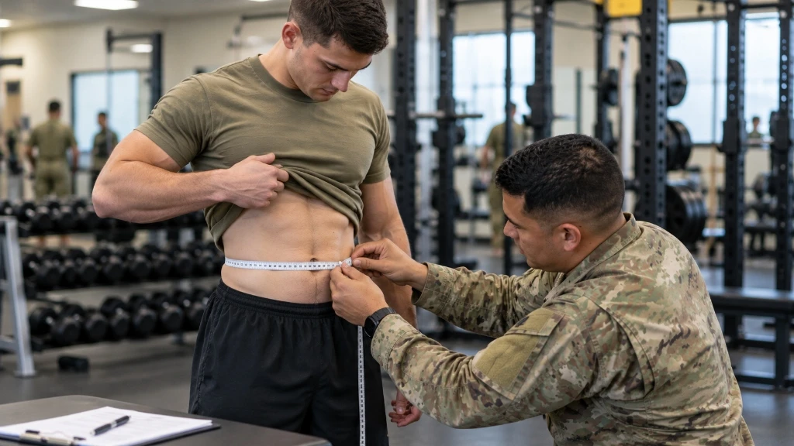
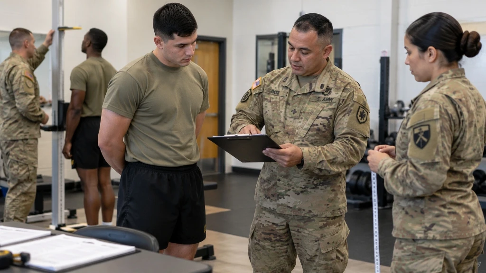

Army Height and Weight Standards 2026: What Changed?
The Army height and weight standards have changed in 2026. Under Army Directive 2026-13, the U.S. Army replaced its traditional height and weight screening tables and previous circumference-based body fat assessment methods with the Waist-to-Height Ratio (WHtR). Soldiers should understand this updated Army body composition standard before their next screening.
This comprehensive guide explains the new WHtR requirement, how to calculate the ratio, and what Soldiers need to know about compliance, retaping procedures, and administrative safeguards.

What Are the New Army Height and Weight Standards for 2026?
The updated policy uses waist-to-height ratio as the Army's official body composition screening method. Under this standard, the required WHtR must be less than 0.55.
Traditional height and weight charts (formerly published in AR 600-9 as Table B-1) are no longer the screening method under this policy. Soldiers should refer to current official Army guidance rather than older screening charts published across legacy websites. If you are reviewing your numbers, understanding how to calculate WHtR for the Army provides direct insight into how your standing height relates to your abdominal circumference.
According to the official Army policy announcement, the shift to WHtR eliminates discrepancies where muscular Soldiers with dense lean mass were penalized by weight scales. The new ratio offers a medically grounded, equitable, and operationally consistent method to assess Soldier health, physical fitness, and operational readiness.
Key Takeaway of Army Directive 2026-13:
No weight scales or multi-site body fat tapes determine your primary pass/fail status. Your compliance rests entirely on your waist circumference divided by your barefoot height.
How to Calculate the Army Waist-to-Height Ratio
The WHtR formula is straightforward and easy to compute:
Army screening guidance specifies measuring waist circumference horizontally at the navel (belly button) and dividing that measurement in inches by standing height in inches. To ensure you position the tape accurately without pulling too tight, consult our detailed tutorial on how to measure waist for Army WHtR.

Consider two practical examples:
-
Passing Example: A Soldier with a 36-inch waist circumference and a standing height of 68 inches has a calculated ratio of:
36 ÷ 68 = 0.5294... → 0.529.
Since 0.529 is strictly below 0.550, this Soldier easily meets the Army screening standard. -
Failing Example: If the waist measures 38 inches and the height is 68 inches, the ratio becomes:
38 ÷ 68 = 0.5588... → 0.558.
Since 0.558 is greater than 0.550, this result exceeds the allowable threshold.
You can test your exact numbers using our interactive Army waist-to-height ratio calculator or use our primary Army Height and Weight Calculator to estimate your waist-to-height ratio before reporting for duty. Remember that an online calculator is informational and does not replace official Army measurements.
What Is the Passing WHtR Score?
The standard is strictly below 0.55 (i.e., less than 0.550). Under official Army administrative procedures, results are recorded to three decimal places without rounding up; digits beyond the third decimal place are disregarded:
| WHtR Ratio | Screening Status | Regulatory Compliance Assessment |
|---|---|---|
| 0.549 or lower | Pass | Meets numerical standard; documented on DA Form 5500. |
| 0.550 | Does Not Meet | Does not meet threshold. Policy strictly requires less than 0.550. |
| 0.551 – 0.559 | Exceeds Standard | Exceeds allowable screening limit. Requires same-day confirmation measurement. |
| 0.560 or higher | Exceeds Standard | Exceeds threshold. If confirmed, results in ABCP enrollment and flagging. |
Accurate waist and height measurements are critical because even a fraction of an inch can move a Soldier across the 0.550 boundary.
How Often Are Soldiers Screened?
Under the revised policy, Soldiers must undergo WHtR body composition screening at least twice per calendar year, typically scheduled in conjunction with semi-annual physical readiness assessments. Commanders also retain the authority to direct an assessment whenever they have objective concerns regarding an individual Soldier's compliance.

To safeguard Soldiers against measurement anomalies, the directive establishes a strict same-day confirmation protocol:
The Confirmation Retest Rule:
If a Soldier's initial measurement yields a WHtR of 0.550 or higher, an entirely different certified taping team must perform a confirmation measurement on the same duty day. If the second measurement meets the standard (< 0.550), the Soldier passes. If the confirmation measurement also fails, the failure is verified and formal administrative enrollment commences.
What Happens If a Soldier Fails?
A confirmed screening failure triggers enrollment in the Army Body Composition Program (ABCP) and the initiation of a formal administrative flag under AR 600-8-2 (Suspension of Favorable Personnel Actions):
- DA Form 5500 Recording: All WHtR assessments are documented on DA Form 5500 and uploaded directly into the Army Training Information System (ATIS). The historical female-specific form, DA Form 5501, has been discontinued under Directive 2026-13.
- No Fitness Test Exemptions: Previously, Soldiers scoring 540 or higher on the fitness test (with 80+ points in every event) were exempt from body fat taping. Under Directive 2026-13, a high Army Fitness Test score no longer provides an exemption. All Soldiers must meet the WHtR standard.
- 180-Day Assessment Period: To assist Soldiers in adjusting to the new standard, the Army established a 180-day transition timeline before separation actions for WHtR non-compliance can proceed. During this period, enrolled personnel receive dietary counseling, tailored physical conditioning, and monthly progress evaluations.
Old AR 600-9 Rules vs. 2026 Standards Summary
| Policy Dimension | Former AR 600-9 Policy | 2026 Standards (Directive 2026-13) |
|---|---|---|
| Primary Screening | Weight-for-Height Tables (Table B-1) | Waist-to-Height Ratio (WHtR) |
| Secondary Evaluation | Circumference Tape Test (Neck/Waist/Hips) | Same-Day Alternate Team Confirmation |
| Passing Criteria | Max table weight or age-graded body fat % | WHtR strictly < 0.550 |
| Official Form | DA Form 5500 (Male) & DA Form 5501 (Female) | DA Form 5500 for All Soldiers |
| Fitness Score Exemption | 540+ with 80+ in each event exempt | Rescinded (No score-based exemptions) |
Frequently Asked Questions
Are the old Army height and weight charts still used?
No. The updated policy officially replaces the former Table B-1 screening tables and multi-site tape tests for body composition screening. Height and waist measurements now calculate a single waist-to-height ratio.
Can a high Army Fitness Test score provide an exemption?
No. The former physical fitness exemption has been rescinded under Army Directive 2026-13. Every Soldier, regardless of athletic performance or high test score, must meet the 0.550 WHtR standard.
Where can I verify the current policy?
You can verify current regulations by reviewing the official Army Body Composition Program FAQs and the Army Directive 2026-13 policy announcement.
What happens if my confirmation measurement also fails?
If both the initial and the confirmation measurement conducted by a different team on the same duty day are 0.550 or higher, the Soldier will be enrolled in the ABCP and flagged under AR 600-8-2.
Final Thoughts
The 2026 Army body composition policy makes the waist-to-height ratio the primary screening measure across all Army components. Soldiers should learn the formula, measure waist circumference accurately at the navel, and use official Army guidance for compliance decisions.
Online calculators like our Army Height and Weight Calculator are exceptional tools for personal benchmarks, self-audits, and early preparation. However, official screening conducted by designated unit leaders determines your documented record on DA Form 5500.
Official References & Authoritative Sources
- U.S. Army Body Composition Program (ABCP) Portal →
- Official ABCP Policy & Directive FAQs →
- Official U.S. Army News: Adoption of Waist-to-Height Ratio →
- Use our interactive Army Height and Weight Calculator to test your measurements and verify compliance with current regulations.